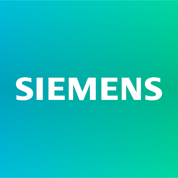

About Me
MS EE Grad @ Stanford University | IIT Goa'23 | Siemens
I am a first year MS EE student at Stanford University specialising in Software and Hardware systems. Prior to Stanford, I graduated from the Indian Institute of Technology (IIT), Goa with a Bachelor's in Electrical Engineering (CPI: 9.67/10) in 2023. In my final year of undergraduation, I worked as a ML Research Intern at Siemens Technology, wherein I developed Deep Learning based anomaly detection libraries and devised efficient algorithms for accurate time-series analysis.
I was also an Undergraduate ML Researcher at the Indian Institute of Technology (IIT), Madras, where I was fortunate to work with Chair Prof. Dr. R. Sarathi on applications of LIBS-assisted Machine Learning Techniques for the prognosis of gas insulation systems. As a Google exploreCS Research Intern, I delved deeper into Computer Vision, implementing energy-based identifiers for open world object detection. I also worked as a Research Assistant in the research group of Prof. Dr. Asli Eksi, Salisbury University, US, utilizing data driven approaches in Computational Finance, specifically in the assessment of robo-advisors.
- E-mail: snehajay@stanford.edu
- Google Scholar: CLICK HERE
|  | ||
| IIT Goa 2019-2023 |
Siemens 2022-2023 |
Stanford University 2023-Present |
Internships


Curriculum Vitae
Click here to download my latest full CV.
Research Interests
My research interests primarily lie in the utilization of an AI-centric data driven approach to analyze various problem statements in order to build intelligent & autonomous decision-making agents using real-world datasets in different domains. By exploring the power that data holds, I aim to devise cutting-edge Machine Learning and Deep Learning systems to solve large-scale problems spanning from Healthcare & Finance to Sustainable Energy & Robotics. In particular, I am interested in working at the intersection of Computer Vision, Signal Processing, Reliable Machine Learning, Optimization and Data Analytics.
News
| Jun '23 |
I will be joining as a MS EE Grad at Stanford University this fall. Beyond excited for this new beginning! |
|---|---|
| Jan '23 |
Selected as an undergraduate participant to attend Google's Research Week 2023 at Bangalore! |
| Jun '22 |
I started my internship at Siemens Technology as a ML Research Intern. |
| May '22 |
Selected as a Google explore-CS Research Intern:) Working on Open World Object Detection at IIT Hyderabad. |
| Jan '22 |
Joined as a Research Assistant under Prof. Dr. Asli Eksi, Salisbury University (ML integrated with Computational Finance) |
| Jan '22 |
Selected to present my Paper at the Data Science Symposium, IIT Madras. |
| Sep '21 |
Ranked 2 nationally in the Deep Learning Course Examination conducted by the Centre for Development of Advanced Computing! Link |
| July '21 |
Paper published in the Journal of Physics Communications, IOP Publishing, UK! |
| July '21 |
Paper presented at the IEEE ICPADM Conference, Malaysia, and published in IEEE Xplore! |
| Mar '21 |
Presented my Research Paper at the Student Research Convention (SRC’21), Indian Institute of Technology, Kanpur. |
| Jan '21 |
Won the Chatbot Building Competition at Cepheus: IIT Goa’s Annual Technical Festival. |
| Sep '20 |
Conducted 3 solo live sessions on Android App Development and Basics of Kotlin Language as a part of DSC IIT Goa for juniors. 1 2 3 |
Publications
2021
Miscellaneous
During my undergraduation, I held various leadership positions which gave me a wonderful opportunity to share my knowledge within the student community. As a core member of IIT Goa's Google Developer Student Group, I conducted 3 live sessions under the Android Study Jams Program where Basics of Kotlin, Android Studio and Android App Development were introduced to the participants. Check out the sessions here! 1 2 3
I love to spend my free time skating (who doesn't love the thrill of a cool breeze whilst gliding on wheels), playing badminton or reading. Business, Finance, and Startup stories always manage to excite me. Like my dad, I'm fond of learning unconventional words (a lexophile!) and new languages. Being a travel buff, I am always willing to explore diverse places, cuisines and cultures.
If you are in the Bay area and would like to connect for a research project, a general discussion or just exploring some newly open cafes, feel free to reach out to me:)